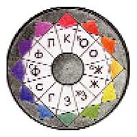

Опыт нумерологической колористики или число и цвет
Квартернер
- Когда мерцает в дыме сел
- Сверкнувший синим коромысел,
- Проходит Та, как новый вымысел
- И бросит ум на берег чисел.
- (В. Хлебников)
- Сверкнувший синим коромысел,
Число четыре (четверица, квартернер) — поистине удивительное число. Где только мы его не встречаем: в раннем детстве слушаем колыбельные песни, стишки и прибаутки на четыре счета, потом заучиваем считалочки в том же бодром ритме, потом берем тетрадки и книжки по арифметике, где на бумаге, покрытой квадратиками, выводим примеры на четыре правила арифметики. Нам внушают, что дважды два будет четыре …Немного подросши, покупаем в кубическом ларьке заманчивые квадратные пакетики с орешками, сигаретами, компакт-дисками… Еще немного возмужав, позволяем себе четвертушку чего-нибудь тонизирующего и критически оцениваем все четыре фасада знакомых девушек — какой лучше всех? Это кому какой… Окончательно повзрослев, сидим за столом (рекомендую четырехугольный — самый удобный), взираем на окружающий мир через квадратные рамы окон и некритически воспринимаем четырехугольность всей современной городской архитектуры, неумолимо и беспощадно четырехугольной как в массах, так и в деталях. Наконец, свершив свой жизненный путь, мы укладываемся в прямоугольный ящик (сиречь гроб) и в могилу такой же конфигурации.
Все это знакомо любому жителю, и может быть дополнено еще множеством примеров. Здесь удивительно только изобилие наших встреч с числом 4 и с предметами, в основе которых заложена идея четверицы. Еще более удивительна многогранность смыслов четверицы и универсальность категорий, отмеченных этим числом. Назовем некоторые из них.
I. Земное и небесное.
Как только обращаем взор вниз, на Землю, так обязательно видим четверицу — устроительницу земного вещества, земного времени и пространства. Все вещи мира были созданы из четырех первоначал (или стихий) — земли, воды, воздуха и огня.
Тэтраэдр – огонь.
В свою очередь, каждая из этих стихий сформировалась из геометрических тел: земля — из куба, вода — из икосаэдра, огонь — из пирамиды, воздух — из октаэдра. Сотворению каждой из этих стереометрических фигур предшествовало число, и самое активное формообразующее число для всех этих многогранников — четыре.
Мы с вами делим год на четыре квартала (сезона), а пространство — на четыре стороны света. В мифологии древних народов всем временам года и сторонам света были присвоены различные цвета, составляющие четырехцветные системы. У греков это красный (огонь), черный (вода), белый (воздух) и желтый (земля); у китайцев — красный (восток), желтый (юг), белый (запад) и черный (север).
Октаэдр – воздух.
Поскольку числа — души вещей, то их, как и все вещи, можно подразделить на материальные и духовные, земные и небесные, божественные и человеческие. Так, если троица — число божественное и духовное, то четверица — скорее человеческое и материальное по природе. А там, где видите четверицу в святыне — знайте, что святыня эта снизошла с неба на землю, что она удостоила земной мир своим временным присутствием. В примерах недостатка нет: христианский крест, на котором был распят Спаситель; четыре столпа и четыре стены храма — обиталища Бога и модели грядущего царства Божия, четыре опоры для купола — символа Неба, четыре великих библейских пророка, столько же апостолов и святых Евангелий… Сам небесный Иерусалим в видении Иоанна Богослова представляет собой квадрат, обнесенный четырьмя стенами — квадратами. И этой святыне тоже предстоит опуститься на землю после ее обновления и очищения от всякого беззакония. Человек, делающий святое и богоугодное дело, исчисляет реалии своей жизни в числах, кратных четверице или содержащих ее. Так праотец Иаков для исполнения божьего Завета, т.е. умножения племени Израиля подобно песку морскому, имел четырех жен — двух законных и двух наложниц. Они довели число родоначальников колен израилевых до двенадцати, т.е. трех четвериц. Четверо животных, (2) окружающих небесный престол Сидящего на нем, воплотились в земной ипостаси, чтобы стать спутниками апостолов — строителей церкви Христовой, а один из них — агнец — хлеб живый, сшедший с небес.
Куб – земля.
Наблюдается также обратная зависимость: если в небесных сферах, в нездешних обителях имеется что-то позаимствованное из земных реалий, то этих реалий — четыре. Так, из Рая вытекали четыре реки — Фисон, Гихон, Евфрат и Хидекель; в мусульманском раю было четыре сада, темнозеленые, обильные водами, плодами и всякими благами. Вопрос: сколько церквей должно быть в стольном граде для спасения души христианина? В царской Москве их было сорок сороков, т.е. четыре четверицы, взятые сто раз.
Икосаэдр – вода.
II. Зримое и умопостигаемое.
Четверица является нам в образах, воспринимаемых нашими чувствами — зрением, осязанием, слухом, мышечным усилием. Вот Луна — мы видим четыре фазы ее формы. Вот человек — он ходит утром на четырех ногах, да и после нередко уподобляется животным в этом удобном способе передвижения.
Премудрый Соломон наблюдает четыре феномена, которые не может понять: пути орла на небе, пути змея на скале, пути корабля среди моря и пути мужчины к девице. Возникает вопрос: почему так мало? Неужели все остальное понятно? Много несправедливостей творится на земле; Соломон называет четыре самых вопиющих, от которых трясется земля и которых она не может носить (прочитайте об этом в Книге Притчей Соломона, 30; 21-23).
А почему наши мышцы более чувствительны к тяжестям, если их вес выражен в фунтах или пудах? Почему пуд тяжелее, чем 16 кг, а фунт тяжелее, чем 400 г? В самом слове «пуд» ощущается большая тяжесть, которой нет в голом числительном «шестнадцать» или в безличном «кг». Пуд сродни словам бум, бом(ба), бам, бан(да). Все это обозначения чего-то громкого, опасного, тревожного, напряженного, тяжелого, как пуд.
Вместе с тем множество вещей, недоступных ощущениям, т.е. умопостигаемых, также отмеривается четверицей. Платон приводит четыре аргумента в доказательство бессмертия души. Он же полагает началами всех вещей триаду: предел –> сущность <– беспредельное. Но то, что созидает все вещи и объединяет три начала — это четвертая категория — причина. (3)
Кораническая наука насчитывает четыре корня ислама: здравые верования, искренность в стремлении к цели, память о законе, верность обету. (4)
Будда Гаутама в момент просветления открыл четыре фундаментальные истины, а также Благородный восьмеричный путь, ведущий к прекращению страдания. Среди названных Буддой компонентов этого пути четыре состоят из четырех действий (физических или умственных), и один — из четырежды четырех. Остальные два пункта этого перечня составлены в сумме из четырех подпунктов. Эту сложную музыкальную структуру можно спеть или сыграть на ударных инструментах в четырехтактном ритме — она как будто для этого создана.
Немецкий мистик Якоб Бёме, перечисляя семь свойств Природы, уделяет четвертое место духовному огню, «посредством которого манифестируется свет, являющийся единством». Заметим, что четвертое место в ряду семи — это центрально место; оно придает особую ценность размещенной здесь вещи, категории, сущности (вопреки пословице «Не место красит человека»). По словам Якоба Бёме, в огне и свете «заключена жизнь всех вещей,… будь то вещи сверхчувственные, разумные или растительные». (5)
Четверица была сакральным числом у древних народов и остается таковой у аборигенных племен. Так, полинезийский народ Маори почитает божество Вакан Танка, состоящее из четырех видов вакан по четыре существа в каждом виде — итого шестнадцать разных существ, но все они — «все равно, что одно». Математически это можно выразить красивым уравнением:
4х4=1
III. Физическое и психологическое.
Все мы любим иногда побранить немного научный и технический прогресс: поводы всегда найдутся. Но великое достижение науки ХХ века, свободное от сомнений и упрека — это открытие роли четверицы в самой глубине микромира, в природе атома. Электрон недоступен нашему зрению, но мы знаем, что его место в атоме и его индивидуальность определяется набором четырех квантовых чисел. (6) Если в атоме есть другие электроны — они имеют свой набор из других четырех чисел, подобно тому, как абоненты телефонной сети имеют свои индивидуальные номера. Почему этих чисел именно четыре?
Вот вам, читатель, хороший предмет для размышления. Сказанное выше уже содержит в себе намек на ответ. Далее добавим еще нечто. Вот, хотя бы, изречение Карла фон Эккартсгаузена: «Двойная четверица содержится в системе творения». (7)
К этому можно добавить: поскольку человек входит составной частью в систему Творения, то и главный его орган — душа — содержит четыре начала: ум, знания, мнение, ощущения, от которых происходят (если верить пифагорейцам), «всякое искусство и всякая наука, и благодаря которым мы разумные существа»… (8)
Пифагореец Филолай приписывает бытию четыре высших свойства: эрос, дружба, целеполагающий разум и мысль. Это, как принято считать, исключительно душевные свойства человека — венца Творения. Однако философы школы Пифагора распространяли названные четыре свойства на всю природу; эти категории были для них своего рода священными заповедями; пифагорейцы клялись четверицей, почитая ее величайшей клятвой:
- Нет, клянусь передавшим нашей главе четверицу,
- Вечной природы исток и корень в себе содержащу. (9)
Уместно вспомнить, что сам Аллах тоже клялся математическими понятиями наравне с небесными ценностями:
- Клянусь зарей и десятью ночами,
- и чётом и нечетом,
- И ночью, когда она движется!
Разве в этом — не клятва рассудительного? (10)
Вернемся к проблемам психологии. Ученые древности различали четыре типа людей по темпераментам: сангвиники, холерики, флегматики и меланхолики. Такое же разделение сохраняется в принципе по сей день (хотя наука сильно усложнилась). Современные психологи различают четыре типа поведения, связанные с предпочтениями четырех цветов: красный, голубой, зеленый, желтый. Каждому из этих цветов соответствует определенное чувство самовосприятия, например:
- красный — самоуверенность
- голубой — удовлетворение
- зеленый — самоуважение
- желтый — свобода (самовыражение).
- голубой — удовлетворение
Этими четырьмя цветами также кодируется самооценка (11).
При помощи цветовых тестов Люшера исследуется характер человека и его психологические особенности. Тот или иной выбор основного цвета может быть определяющим, но психологи полагают, что «нормальный» человек должен быть «четырехцветным», т.е. гармонично сочетать в своей психике различные черты; здесь Макс Люшер полностью солидарен с учениями древних, которые связывали темперамент человека с преобладанием в его природе одной из четырех стихий — огня, земли, воды или воздуха. Правда, в тестах Люшера эти стихии окрашены не так, как у Эмпедокла, а именно:
- Огонь: желто-красный
- Вода: темно- синий
- Земля: сине-зеленый
- Воздух: светло — желтый
- Вода: темно- синий
Древние китайские учения даосизм и конфуцианство, внимательные к внутреннему миру человека, сформулировали правила духовного самосовершенствования. Их четыре:
- Очищать свое сердце, дабы освободиться от суетных работ.
- Вникать в книги, дабы постичь принципы вещей.
- Бежать легкой славы, дабы охватить весь мир.
- Искать дружбы возвышенных людей, дабы совершенствовать свои манеры. (12)
Мусульманское учение суфизм, рассматривая динамику развития сознания человека, выделяет в этом процессе четыре этапа, сравнивая их с четырьмя различными видами движения — от хождения по земле до хождения по воде. (13)
Откуда такая мифическая власть числа четыре? Почему так универсальна четверица? С точки зрения философа некорректно вопрошать о причине самой причины (ведь мы уже знаем, что квартернер — причина единства раздвоенного). Если ставить вопрос так — можно утонуть в «дурной бесконечности», т.к. конца вопрошаниям о причине в принципе нет. Но если обратиться к законам колористики и простой арифметики, — это может, как говорится, пролить свет на проблему.
Думается, тут есть четыре причины:
- Астрономическое и космогоническое четырехчастное деление времени и пространства.
- Наличие таких же пространственных соотношений в теле человека и оптимальная конфигурация искусственного пространства обитания человека.
- Общность четверицы с триадой и пентадой (с числами 3 и 5), центральное положение квартернера между этими числами. Чтобы получить четыре, нужно к трем прибавить единицу, или от пяти отнять единицу (несложно, правда?) Таким образом, четверица являет собой образ совершенства и добродетели по отношению к своим соседям из натурального ряда: к ней ничего нельзя ни прибавить, ни убавить, т.к. три — для счастья мало, а пять — чересчур. Читатель, не вспоминай, кто еще рассуждал подобным образом: не то автор «Письма к ученому соседу», не то Козьма Прутков… Так рассуждали Дионисий Фрейер, Эккартсгаузен, алхимики и прочие мистики. Почему же нам нельзя?
- И, наконец, хорошие колористы видят в четырехцветии ту полноту и самодостаточность, которые не требуют (и даже не терпят) дополнения. Хроматические трёхцветия — сами по себе устойчивые структуры, но чувствительный глаз не ощущает в каждой из них космической полноты, завершенности и удовлетворения. Если же к триаде добавить четвертый хроматический цвет, то такая система воспринимается как многоцветие, хотя четыре — это еще не предельное число возможных красок. Четырехцветие удовлетворяет стремлению органа зрения (и психики) к разнообразию ощущений и тем самым — к богатству эмоциональной жизни, к обилию ценностей бытия.

Использование более обширной хроматической палитры создает впечатление сверх — обилия, которое, безусловно, может быть уместно в искусстве, но при длительных контактах с человеком утомительно. Четырехцветие — это ни много, ни мало, а как раз оптимально соответствует возможностям и потребностям человека в общем случае, т.е. в нормальном жизненном процессе.
Может быть, пифагорейцы потому так почитали четверицу, что сумма первых четырех чисел натурального ряда составляет божественную декаду — число десять (1+2+3+4=10). Таким образом, в четверице содержится не только колористическая, но и нумерологическая полнота. Пифагореец Филолай заметил близость в отношениях Тернера и Квартернера, возможность их взаимных превращений путем простых операций, а в стереометрических фигурах — внешнее сходство до неразличимости. Трехгранная и четырехгранная пирамиды, будучи поставлены на плоскость, неразличимы. Филолай решил отметить этот интересный факт дружбы двух чисел: угол треугольника он посвятил четырем мужским божествам: Кроносу, Аиду, Аресу и Дионису. Напротив, угол квадрата он посвятил трем Великим матерям: Гее, Деметре и Гестии.
«Таким образом, — замечает Прокл в комментариях к Евклиду, — четверичная Троица и троичная Четверица, причастные к производительным и творческим благам, содержат целиком весь мирострой рожденных вещей». (14)
Если же перемножить троицу и четверицу — получается величественная и многоуважаемая двенадцатирица, дальше которой нет ничего значительного в натуральном ряду, кроме бесконечных производных от предшествующих членов ряда.
IV.Строгость математики и свобода поэзии.
Однажды Паоло Учелло, вычерчивая замысловатые ракурсы фигур на своей картине, воскликнул: «О сладчайшая перспектива!» Изучая четверицу и квадрат в их различных ипостасях, я невольно шепчу: «О прекрасный квартернер! Ты способен сотворить чудо нумерологии из простого натурального ряда от 1 до 8 или до 16, а можешь расположить числа от 1 до 100 в такой чарующей гармонической системе, для которой не найдешь достойного эпитета — все будут слабы».
Взгляните, к примеру, на эту простую фигуру:
Сумма чисел в каждом вертикальном столбце равна пятнадцати, в горизонтальной строчке — то же.
Если соединим прямыми линиями все нечетные числа в этом квадрате — получим цифру четыре (4), соединив четные, получим зеркальное отражение цифры ДВА или буквы зет.
Кроме того, в этой фигуре содержатся 6 квадратов и 180 треугольников (проверьте!) Еще более красив магический квадрат из шестнадцати чисел. Здесь суммы чисел по вертикалям, горизонталям и диагоналям равны 34. Мы не будем вычислять количество геометрических фигур, которые можно вписать в структуру этого квадрата. Ваш компьютер поможет вам сделать это быстро и точно.
Мы здесь только изобразим четыре интересные фигуры, которые прочерчивает линия, соединяющая числа в порядке натуральной прогрессии 1-2-3-4, 13-14-15-16 и т.д.
Напоследок полюбуемся очарованием квартернера совсем в другой области — в поэзии, музыке, мистических ритуалах… Присмотревшись, видим, что это не просто очарование, а прямо-таки власть, деспотия, гипноз. От античности до наших дней поэты возводят свои четырехстрочные строфы из более или менее многостопных строчек.
- Мне дела нет до Гига многозлатного
- Чужда мне зависть, на богов не сетую
- И царской власти не ищу величия, —
- Все это далеко от взора глаз моих.
- Чужда мне зависть, на богов не сетую
Признается мужественный эллин Архилох.
С течением времени строка становится короче, ямбический стих обретает динамизм и легкость.
- Клянусь четой и нечетой,
- Клянусь мечом и правой битвой,
- Клянуся утренней звездой,
- Клянусь вечернею молитвой… (Пушкин)
- Клянусь мечом и правой битвой,
Современная поэзия использует множество форм — поистине свобода поэта не знает ограничений. Но четырехстрочная строфа остается бессмертной классической формой. Она излюблена не только большими поэтами, но и народной традицией, которая запирает вольную фольклорную стихию в строго канонизированные ритмы частушки:
- У кого не из Парижа
- Туфли, плащ, одеколон,
- Тот уже из моды вышел —
- Извините за пардон. (15)
- Туфли, плащ, одеколон,
И в Европе, и в Азии поэты хранят в памяти число четыре и извлекают его наружу в самых, казалось бы, неожиданных случаях. Великий таджикский поэт Низами сетует на житейские мелочи, мешающие ему сочинять огромное количество стихов в самые короткие сроки:
- … Четыре тысячи стихов и больше
- Сложил в четыре месяца, не дольше;
- Свободный от житейских мелочей —
- Сложил бы их в четырнадцать ночей.
- Сложил в четыре месяца, не дольше;
Эту тему можно дегустировать без конца, однако объем статьи не позволяет.
В заключение вспомним удивительный феномен синтеза поэзии и нумерологии, со-бытия их в сознании и творчестве великого поэта ХХ века, Председателя Земного Шара, Велимира Хлебникова. Он всерьез занимался вычислением дат исторических событий и открыл закономерность их появления. Он называл число «проволокой мира», скрепляющей весь универсум.
- И ум, и мир, как плащ, одеты
- На плечах строгого числа.
Так древнее учение о числах возрождается в наше время и получает новую жизнь в творчестве поэтов, художников, мыслителей.
Авторы, процитированные в статье:
- Эмпедокл.
- Откр., 4; 6-8
- Платон «Федон».
- Элиаде.
- Бёме.
- Гастон Башляр.
- Эккартсгаузен.
- Фрагменты ранних греческих философов, т.1
- Там же.
- Коран, сура 89
- В.В.Драгунский. Цветовой личностный тест.
- Роули. Принципы китайской живописи.
- Идрис Шах. Суфизм.
- Фрагменты ранних греческих философов.
- Петр Вегин.
Впервые статья была опубликована в журнале «Proдизайн», №9
На главную > Статьи > Квартернер
Copyright © 2004—2008 Миронова Ленина Николаевна, Иванов Дмитрий Григорьевич